← Back to Intelligent Agents Module
Individual Project: Implementation and Presentation
Concept Genealogy — An LLM-Powered Multi-Agent System for Tracing Academic Ideas
Type: Individual Assignment | Weighting: 40% of module mark | Deadline: End of Unit 11 | Status: ✓ Complete
About This Assignment
Building on the team design proposal from Unit 6, this assignment required me to individually implement, test and present the system I had helped design. The agent had to demonstrate autonomous behaviour: receive a goal, plan a sequence of actions, retrieve and process data, and produce a meaningful output within the academic research domain.
Assignment Requirements
- A fully tested codebase with all required libraries and dependencies
- Code documented with commentary explaining why design and implementation decisions were made, not simply what the code does
- Evidence of execution through demonstrations, screenshots, logs or output captures
- Comprehensive evidence of testing, including unit and functional tests
- Documentation of any remediation carried out to resolve identified issues
- Evidence of development progress across the module, showing incremental improvement
- A README file describing the solution and how to install and run it
- A PowerPoint deck of up to 10 slides with an audio narration transcript
Grading Criteria
- Knowledge and Understanding (25%) — meeting the design requirements
- Presentation and Communication Skills (30%) — application of concepts and features
- Criticality (25%) — critical commentary within the code
- Structure and Presentation (10%) — code quality and appropriate techniques
- Use of Relevant Sources (10%) — acknowledgement of all sources in the README and code
What I Built
I implemented Concept Genealogy, a Python multi-agent system that traces an academic concept backwards through its citation chains. The user enters a concept; the system finds candidate seed papers, extracts the claims the seed paper rests on, walks its references, evaluates and synthesises what it finds, then challenges its own synthesis for weak reasoning and conceptual drift. The result is persisted as a provenance graph and a readable report.
Implemented Agents
- Orchestrator — decomposes the concept into sub-tasks and routes the workflow
- Retriever — searches academic sources and ranks candidate seed papers by citation count
- Extractor — parses the seed paper and extracts its underlying claims and references
- Evaluator / Inspector — validates claims and enforces schema compliance
- Synthesiser — produces a grounded synthesis from the validated claims
- Challenger — critiques the synthesis and analyses conceptual drift
Technology Stack as Implemented
- Orchestration: LangGraph stateful directed graph
- LLM inference: Groq API —
llama-3.1-8b-instantfor lightweight tasks,llama-3.3-70b-versatilefor reasoning - Data sources: Semantic Scholar API, with OpenAlex added as a fallback provider
- Parsing: PyMuPDF, with abstract fallback when PDF extraction fails
- Validation: Pydantic schemas at every agent boundary
- Testing: pytest with pytest-cov
- Environment: Python 3.13.5 on Windows, virtual environment
Human-in-the-Loop Gates
Three mandatory approval gates were implemented as specified in the design:
- Gate 1 — Seed selection: the user chooses which candidate paper to trace, or rejects all and halts
- Gate 2 — Synthesis approval: the user can approve, reject and halt, or refine with feedback (up to three attempts)
- Gate 3 — Final output: the user approves before anything is written to disk
Development Progress and Evidence of Execution
The system was not built in one pass. It grew from a stubbed skeleton into a working pipeline, and several design decisions were forced on me by problems that only appeared once the system was talking to live APIs. The evidence below is presented in the order it happened.
Phase 1 — Environment and dependencies
I began by setting up an isolated virtual environment and installing the dependency stack: LangGraph, Groq, PyMuPDF, Pydantic, sentence-transformers, pytest and supporting libraries.
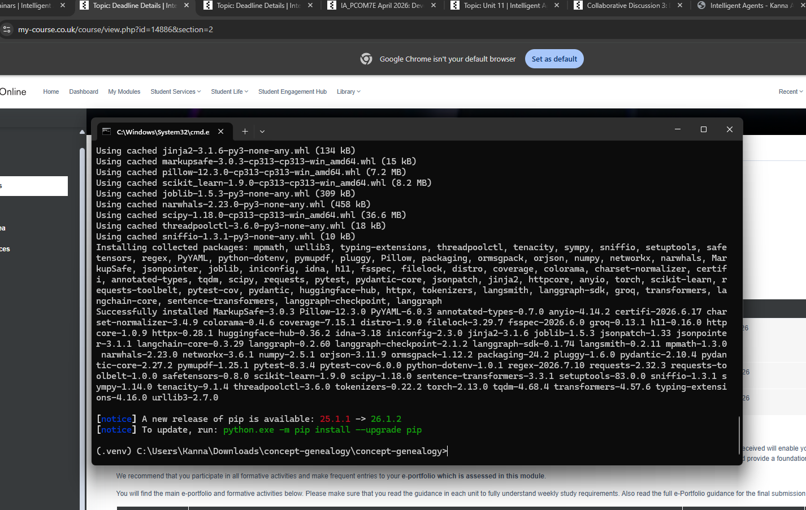
Figure 1. Dependency installation into the project virtual environment.
I then created a Groq API key so the agents could reach the LLM inference endpoint. Groq was selected in the design phase for its low-latency LPU inference and academic-friendly free tier.
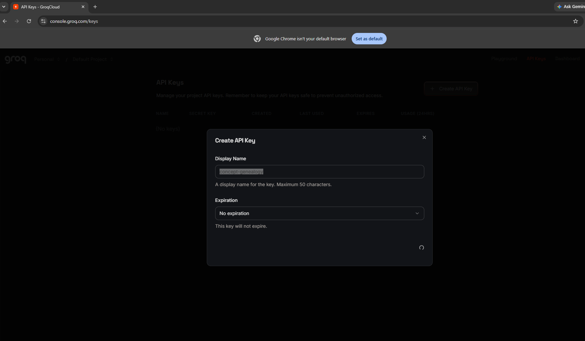
Figure 2. Provisioning the Groq API key used for LLM inference.
Phase 2 — First tests and a stubbed pipeline
Rather than build the whole system and test at the end, I wrote tests alongside each component. The first suite covered graph construction only.
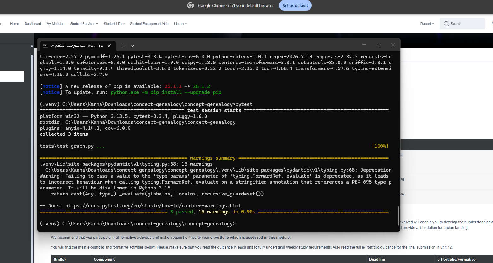
Figure 3. First passing unit tests — 3 tests covering graph construction.
The first end-to-end run failed on a missing LangGraph module, which I resolved by activating the virtual environment correctly. Once running, the pipeline executed with stubbed Synthesiser and Challenger outputs, which let me verify routing and the HITL gates before spending tokens on real inference.
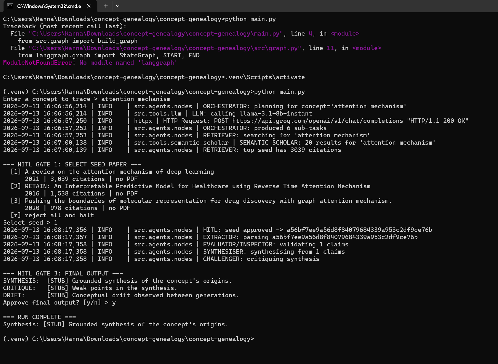
Figure 4. Import error resolved, then the retriever returning live results and the pipeline reaching the HITL gates with stubbed synthesis.
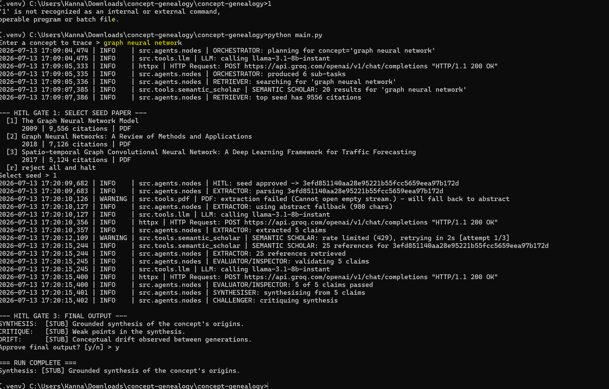
Figure 5. Full pipeline traversal end to end, with the Orchestrator producing six sub-tasks and the run persisting through all three gates.
Phase 3 — Growing the test suite
As the extractor, retriever and backoff logic were implemented, the suite grew from 3 to 14 tests.
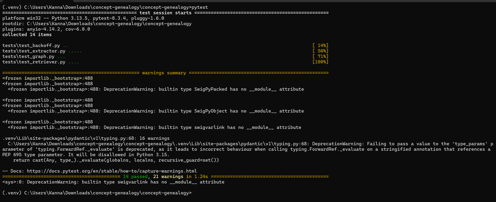
Figure 6. 14 tests passing across backoff, extractor, graph and retriever modules.
Phase 4 — The problem that changed the design
This was the most instructive part of the build. The Semantic Scholar API began returning 429 Client Error rate limit responses. A single failed request was enough to end a run: the retriever returned nothing and the pipeline halted at the first gate with "No candidate papers found."
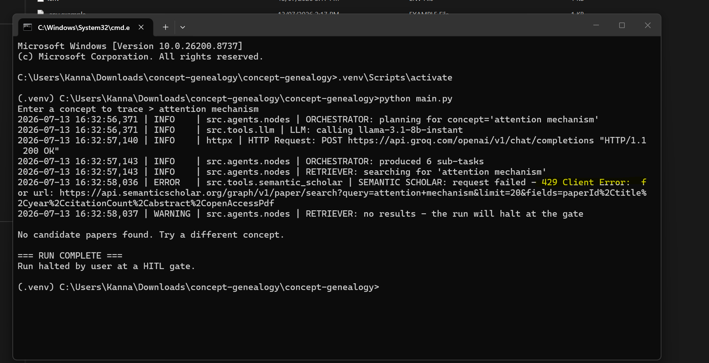
Figure 7. A single 429 response terminating the run — the failure that prompted remediation.
My first remediation was exponential backoff with three retries. The logs show it working as intended, waiting 2s, 4s and 8s. But the underlying limit persisted, so the run still halted.
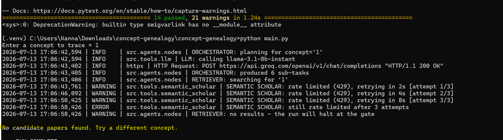
Figure 8. Backoff behaving correctly but insufficient on its own — retries exhausted, run halted.
Repeated runs confirmed this was not intermittent. Retrying a rate-limited service more politely does not help when the limit itself is the constraint.
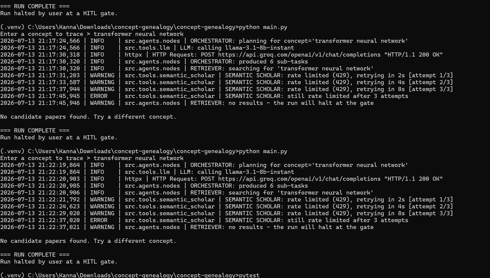
Figure 9. Consecutive failed runs confirming a systemic single-point-of-failure rather than a transient fault.
This forced a genuine architectural change that was not in the original design proposal. I introduced a provider abstraction with OpenAlex as a second data source, plus a local cache. When Semantic Scholar fails, the provider layer falls through to OpenAlex; when a query has been seen before, the cache answers without any network call at all.
Phase 5 — Remediation verified in a live run
The next full run demonstrates the fix working under exactly the conditions that previously killed the pipeline. Semantic Scholar rate-limits and exhausts its retries, the provider layer falls through, the cache answers, OpenAlex returns 20 results, and the run continues to the seed selection gate.
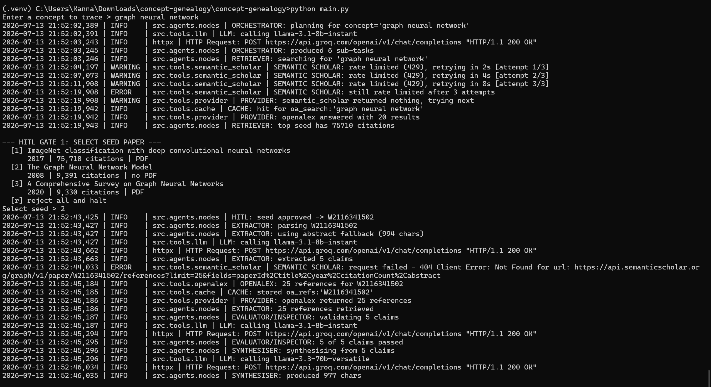
Figure 10. Graceful degradation in action: rate limit encountered, fallback provider engaged, run continues rather than halting. A 404 on the references endpoint is also absorbed and served by OpenAlex instead.
The Extractor also handles missing PDFs by falling back to the abstract, so a seed paper without an open-access PDF no longer stops the trace.
Phase 6 — Real synthesis, critique and drift analysis
With retrieval reliable, I replaced the stubs with real LLM calls. The Synthesiser now produces a grounded account of the concept's origins, and the Challenger critiques it — in the run below it correctly flags that the synthesis overreaches by implying causal links the source material does not evidence.
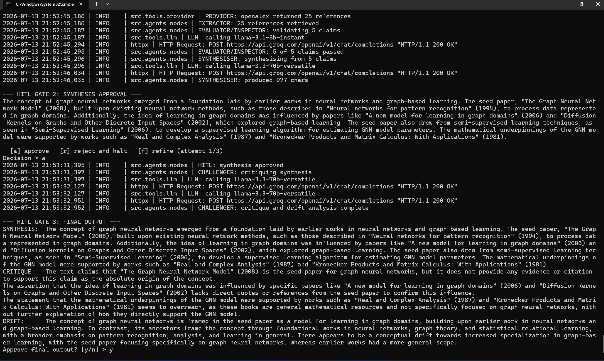
Figure 11. Gate 2 approval, then the Challenger producing critique and drift analysis at Gate 3.
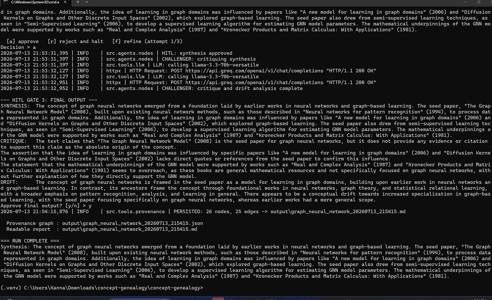
Figure 12. Final approval and persistence — 26 nodes and 25 edges written to the provenance graph, with a JSON graph and a readable Markdown report produced.
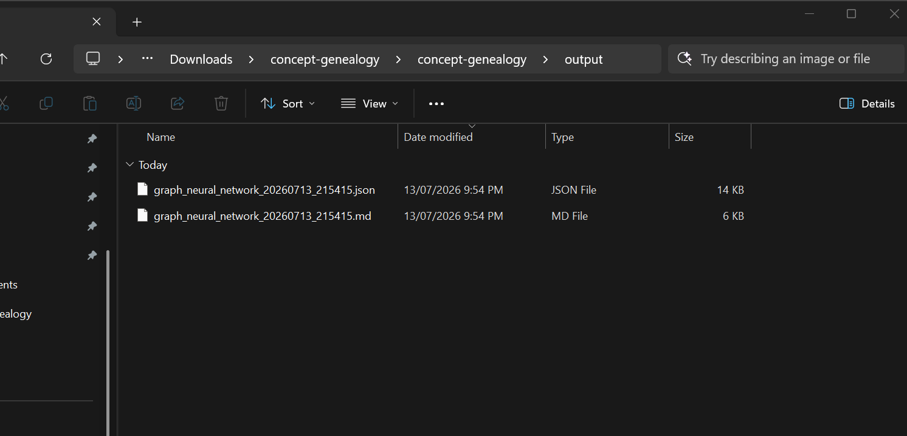
Figure 13. The stored artefacts, satisfying the success criterion that processed information is saved in a usable format.
Phase 7 — The refinement loop
Gate 2 allows the user to refine rather than simply accept or reject. Testing this exposed a defect in the refinement cycle, which I traced and fixed before adding tests to cover the corrected behaviour.
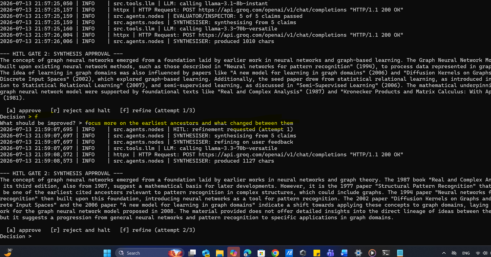
Figure 14. Refinement requested with the instruction to focus on the earliest ancestors; the Synthesiser regenerates from the same validated claims using that feedback.
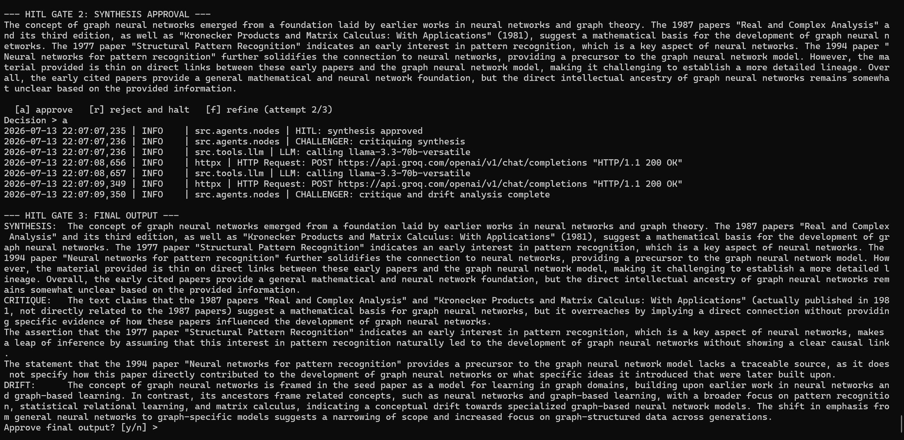
Figure 15. The corrected refinement cycle completing cleanly through to final output.
Evidence of Testing
The suite grew incrementally alongside the implementation, ending at 40 passing tests. Each expansion corresponds to a new component or to a defect found during live execution.
| Tests | Modules covered | What triggered the expansion |
|---|---|---|
| 3 | graph | Initial graph construction |
| 14 | backoff, extractor, graph, retriever | Core agents implemented |
| 19 | + synthesis | Real LLM synthesis replacing stubs |
| 23 | + cache | Caching added to reduce API pressure |
| 38 | + hitl, provenance, provider | Fallback provider, HITL gates and persistence |
| 40 | full suite | Refinement-cycle defect fixed and covered |
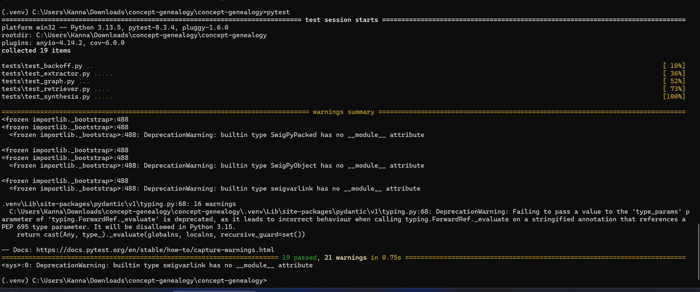
Figure 16. 19 tests passing after synthesis was implemented.
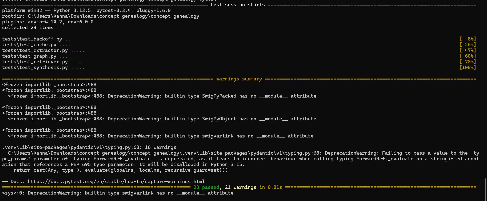
Figure 17. 23 tests passing after the cache layer was added.
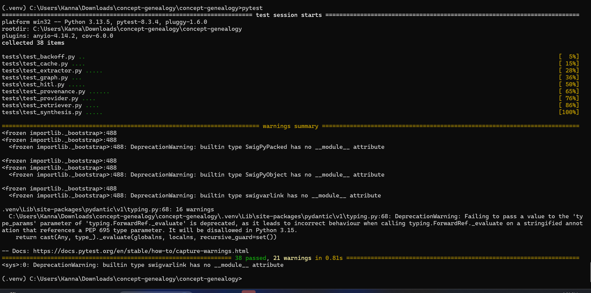
Figure 18. 38 tests passing across nine modules, including HITL, provenance and provider fallback.
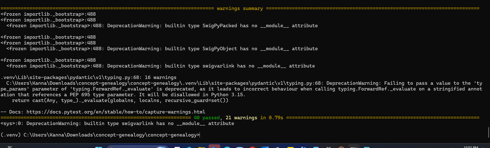
Figure 19. Final suite — 40 tests passing.
Issues Identified and Remediation
| Issue | Remediation | Evidence |
|---|---|---|
| LangGraph module not found on first execution | Corrected virtual environment activation and dependency installation | Figures 1, 4 |
| Semantic Scholar returning 429 rate limit errors, halting the run | Exponential backoff with three retries (2s / 4s / 8s) | Figures 7, 8 |
| Backoff alone insufficient — repeated runs still failed | Provider abstraction with OpenAlex fallback, plus a local cache | Figures 9, 10 |
| 404 on the Semantic Scholar references endpoint for a valid paper | References resolved through OpenAlex instead; failure absorbed by the provider layer | Figure 10 |
| PDF extraction failing on empty or unavailable streams | Abstract fallback in the Extractor so the trace continues | Figures 4, 10 |
| Defect in the HITL refinement cycle at Gate 2 | Cycle logic corrected and covered by additional tests | Figures 14, 15, 19 |
What the Implementation Taught Me
The design proposal anticipated citation-graph explosion, malformed output and hallucination. It did not anticipate that the most disruptive problem would be something as mundane as a free-tier rate limit. The design treated Semantic Scholar as a dependable resource, and building the system revealed it as a single point of failure that could end a run before any agent reasoning began.
Adding the provider abstraction and cache was the point at which the system stopped being a linear script and started behaving like a resilient agent-based architecture: it degrades gracefully rather than failing, and it decides at runtime which source can serve the request. That change came from execution evidence, not from planning, which is the clearest lesson I take from this build.
The Challenger also proved more valuable than expected. In Figure 12 it correctly identified that the synthesis had asserted a causal lineage the retrieved material did not support. An adversarial component that argues against your own system's output is a practical safeguard against confident but ungrounded LLM reasoning, and it is a pattern I would use again.
Submitted Deliverables
- Source code repository — [add your GitHub repository link here]
- README — [link to the README describing the solution and execution instructions]
- Presentation deck and transcript — [link to the PowerPoint and audio narration transcript]
- Output artefacts — provenance graph (JSON) and readable report (Markdown), as shown in Figure 13